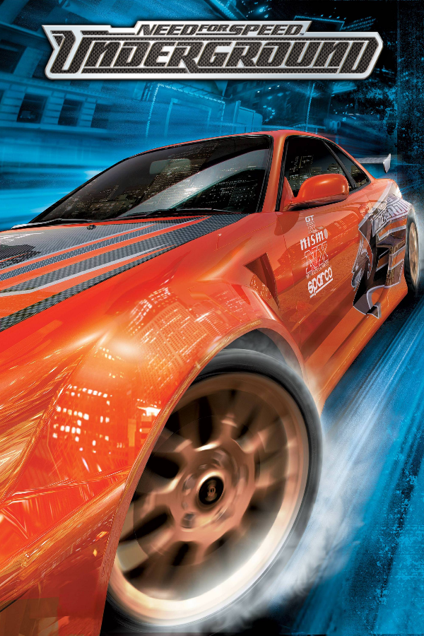

|  | |
| Playtime | Not Played |
| Last Activity | Never |
| Added | 5/7/2025 2:50:35 |
| Modified | 5/7/2025 3:29:42 |
| Completion Status | Not Played |
| Library | Playnite |
| Source | Steam |
| Platform | $PC (Windows) |
| Release Date | 11/17/2003 |
| Community Score | |
| Critic Score | 82 |
| User Score | |
| Genre | Racing |
| Developer | EA Black Box Pocketeers |
| Publisher | Electronic Arts |
| Feature | Multiplayer Single Player |
| Links | Wikipedia MobyGames MobyGames |
| Tag | |
Need for Speed: Underground is a 2003 racing video game and the seventh installment in the Need for Speed series following Hot Pursuit 2 (2002). It was developed by EA Black Box and published by Electronic Arts. Three different versions of the game were produced: one for consoles and Microsoft Windows, and another for the Game Boy Advance. An arcade version developed by Global VR and co-published by Konami came out two years later.
Unlike previous Need for Speed games, which featured sports cars and exotics, Underground featured vehicles associated with the import scene. It was the first game in the series to offer a career mode that features a comprehensive storyline, and a garage mode that allowed players to fully customize their cars with a large variety of brand-name performance and visual upgrades. All races take place in the fictional Olympic City.
Underground was critically and commercially successful, selling around 15 million units and receiving positive reviews. It was followed by Need for Speed: Underground 2 in 2004.
The game begins with a circuit race set in Olympic City (fictional city based mainly on the city of Seattle and named after nearby Olympic National Park), with the player driving a white Honda/Acura Integra Type R that sports a unique set of vinyl and a wide body kit. They dominantly win the race; only to be awakened from a daydream by a woman named Samantha.
Samantha is the player's contact in Olympic City, touring them across the import culture scene and illegal street racing therein. Albeit poking fun at the player's choice of car, she helps the player buy their first car and kickstarts the player by introducing them to local street racers such as Jose (who offers circuit events), Klutch (who offers drag events), and Dirt (who offers drift events). In event #7, she introduces him to T.J., a mechanic who rewards them with numerous performance upgrades and parts, provided they win their time trial challenges. Samantha also issues time trials to the player, her rewards being unique visual modifications instead.
Eventually, the player draws the attention of The Eastsiders, after racing their members Chad, Kurt, and Todd to climb up the racing ranking boards. Eddie, the leader of the gang and his girlfriend Melissa take notice of the player. Eddie is the current best underground racer in Olympic City - unimpressed by the player, he insults them for their racing skills, going as far as demanding they "take a taxi home so that he can get home faster" while throwing cash at their face, and signaling for a taxi cab to pick up the player in an event.
In time, the player develops too much reputation and hype to be ignored by Eddie, who proceeds to challenge them to race Samantha to continue upward in the ranking boards. She gets infuriated by the player's acceptance and loses after she totals the engine of her Honda Civic Si during the race. Her car is taken by T.J. for himself thereafter. Deeply saddened by the player's willingness to race her and the loss of her car to T.J., Samantha distances herself from the player, but they continue receiving race offers nonetheless.
Building up to the endgame, the player faces and defeats Chad, Kurt, Todd, and Dirt for the #1 rank of their respective boards, then faces T.J. in Samantha's vandalized Civic in a pink slip race. They win the car back and return it to Samantha, rekindling their friendship. Samantha rewards the player with a unique body kit choice.
Eddie then challenges the player to a sprint race and loses; before the player's crew can celebrate, an unidentified racer in a grey Nissan 350Z challenges the player to a final 4-lap circuit race; the driver of the 350Z is revealed to be Melissa. The player accepts her challenge and wins, solidifying their status as the best underground racer in Olympic City.
Gameplay in Underground typically involves the player defeating opponents in an illegal street races in the fictional Olympic City (which was largely based on many real-life cities such as Vancouver, London, Paris, Los Angeles, New York City, and San Francisco.) The game introduces nitrous oxide for the first time in the series which can be used to boost the acceleration of the car for maximum speed; however, it can only be used once and cannot be used again until the player restarts the race.
There are several game modes present in Underground:
In the car customization menu, cars can be altered with performance upgrades and visual upgrades, such as paint colors, vinyl, underglow neon, custom front, and rear bumpers, custom side skirts, spoilers, custom hoods, exhaust tips, roof scoops, custom tires and stickers, and wide body kits.
Players can apply performance upgrades to their vehicles. The player can upgrade their car's engine, drivetrain, suspension, tires, engine control unit (ECU) as well as add nitrous oxide, turbochargers and reduce the car's weight (in the form of "weight reduction packages"). Performance upgrades are earned by completing certain races in the story mode.
Underground features a total of 20 fully licensed cars. In contrast to previous installments that featured predominantly exotic cars, the cars in Underground are exclusively tuner-type cars (such as the Dodge Neon, Mazda RX-7, Toyota Supra, Honda Civic Si, Nissan 350Z, and Volkswagen Golf GTI). Underground is also notable for being the first game in the Need for Speed series to offer a Korean-made car, the Hyundai Tiburon, as a playable vehicle.
First introduced in Underground was the Style Points system, strongly influenced by "The Kudos" system in Metropolis Street Racer and Project Gotham Racing. Style Points are rewarded to the player for performing stunts and being competitive in race events. Style Points can be multiplied by the Style Modifier, which can be increased by visually modifying the player's car. The more "tricked out" the design of the player's car, the higher their score gets multiplied. Style Points are earned by drafting, power sliding, taking shortcuts, closely avoiding traffic, and avoiding walls. Style Points gradually unlock visual upgrades for the player's car, as well as custom cars they can drive.
The game's soundtrack contains 26 licensed songs, ranging from rap, hip hop, rock, EDM, and drum and bass, performed by artists like Nate Dogg, T.I., as well as Lil Jon & The East Side Boyz (who are best known for performing the game's theme song, Get Low), Petey Pablo, Static-X, Rob Zombie, Lostprophets, The Crystal Method, Junkie XL, Andy Hunter, Asian Dub Foundation and BT (who is best known for producing the game's opening song, "Kimosabe"). The main menu mostly plays hip-hop music, while the race sequences mostly play electronica, metal, techno, and disco music, though it is also optional for the player to integrate the main menu music into the race sequences or the race music into the main menu.
Need for Speed: Underground was first announced in April 2003. Underground features 20 fully customizable licensed Vehicles from thirteen manufacturers, and hundreds of aftermarket parts from no fewer than 52 aftermarket parts manufacturers, including Bilstein, Holley Performance Products, GReddy, Sparco, HKS Power, PIAA Corporation and Enkei. The game's visual effects was designed under the supervision of Habib Zargarpour, who previously worked on the pod-racing sequence in Star Wars: Episode I – The Phantom Menace. Need for Speed: Underground was released worldwide in November 2003 for PC, PlayStation 2, Xbox and Nintendo GameCube (with the exception of Japan for PlayStation 2 and GameCube on December 25).
The game had a marketing budget of $5.8 million.
The arcade version was developed by Global VR and published by Konami with assistance from Electronic Arts, released in late 2005.
Need for Speed: Underground received positive reviews according to review aggregators GameRankings and Metacritic. Both gave it a score of 84.29% and 85 out of 100 for the PlayStation 2 version, 83.73% and 83 out of 100 for the GameCube version, 82.29% and 82 out of 100 for the PC version, 81.76% and 83 out of 100 for the Xbox version and 77.33% and 77 out of 100 for the Game Boy Advance version. The only complaints critics had were the repetitive tracks, unbalanced rubberband AI, especially in the game's Easy mode, and the lack of free roam and damage in the game, with the latter only confining to detachment of license plates and side mirrors from cars during collisions, especially during Drag races.
In the UK, Official UK PlayStation 2 Magazine gave the PS2 version a score of nine out of ten and made much of the illegal nature of the gameplay. They praised the speed but called the title as another driving game with Hollywood sparkle. In Japan, Famitsu gave the GameCube and PS2 versions a score of two eights and two nines, bringing it to a score of 34 out of 40.
According to Electronic Arts, Need for Speed: Underground was a commercial hit, with sales above 7 million units worldwide by mid-2004. Underground ultimately sold 15 million copies worldwide.
By July 2006, the PlayStation 2 version of Underground had sold 2.6 million copies and earned $115 million in the United States alone. Next Generation ranked it as the sixth highest-selling game launched for the PlayStation 2, Xbox or GameCube between January 2000 and July 2006 in that country. It was the highest-selling Need for Speed game released between those dates in the United States. The PlayStation 2 version also received a "Double Platinum" sales award from the Entertainment and Leisure Software Publishers Association (ELSPA), indicating sales of at least 600,000 copies in the United Kingdom, where it had sold 700,000 copies by January 2004.
The editors of Computer Gaming World presented Underground with their 2003 "Racing Game of the Year" award.
Need for Speed: Underground also won The Electric Playground's 2003 "Best Driving Game for PC" award, the Interactive Achievement Award for "Console Racing Game of the Year", and The CESA Game Awards for "Global Awards (overseas works)" from CESA and Ministry of Economy, Trade and Industry.